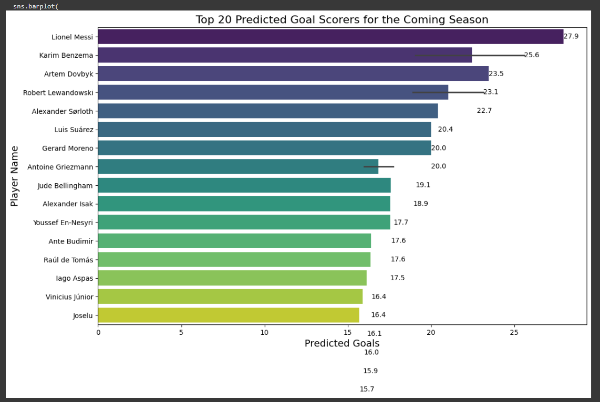
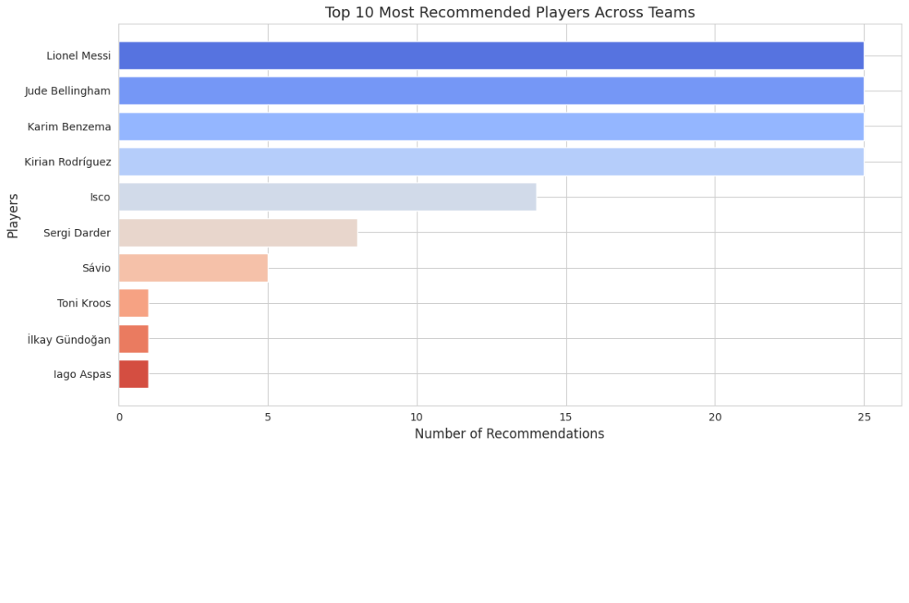
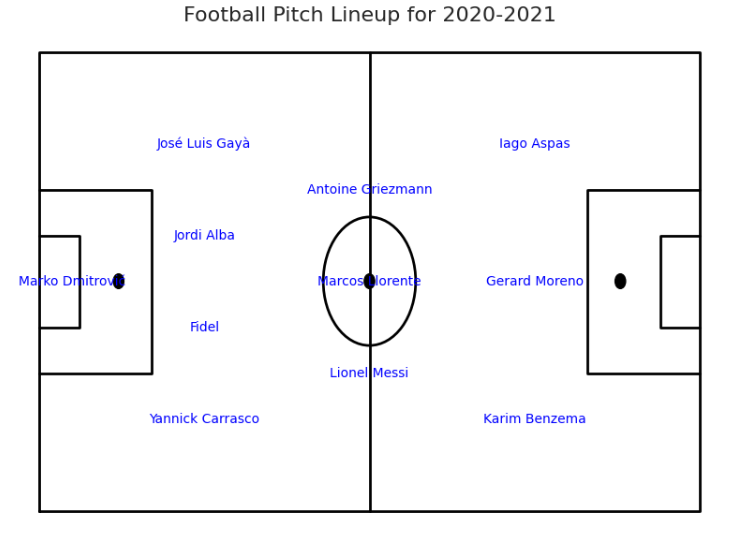
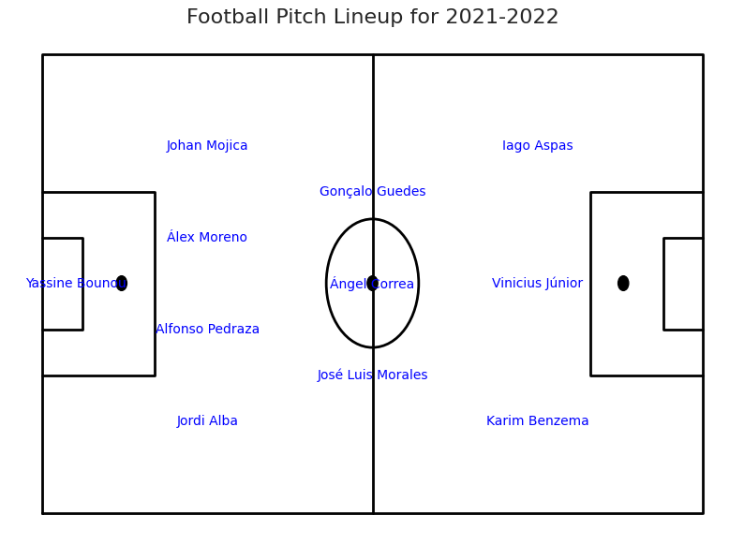
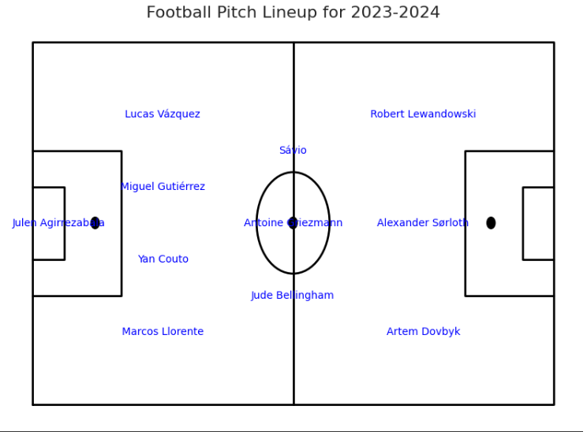
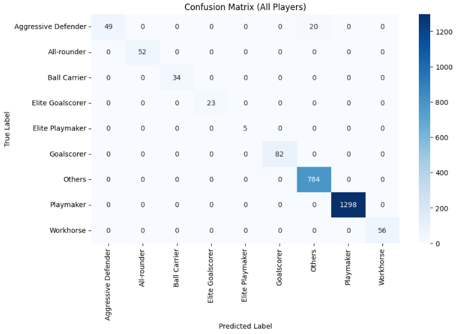

Player Dataset Models
-
Top 20 Predicted Goal Scorers for the Coming Season
This model forecasts the top 20 players expected to score the most goals in the upcoming football season. By leveraging machine learning techniques, the model utilizes player features such as matches played, minutes on the field, expected goals, non-penalty expected goals, progressive carries, and passes, among others. The output is based on a trained regression model that predicts goal-scoring potential for each player. The insights help analysts and coaches focus on key players and optimize their strategies for the season.
 -
Top 20 Predicted Assist Leaders for the Coming Season
This model forecasts the top 20 players expected to lead in assists for the upcoming football season. Utilizing a Random Forest Regressor, it analyzes features such as progressive passes, expected assists, non-penalty expected goals assists, player age, and minutes played to predict assist potential. By examining historical player data, this model offers valuable insights for team strategists and coaches, highlighting the most impactful playmakers in the game.

team Dataset Models
-
Team Data Analysis and Player Recommendations
This model leverages cosine similarity to recommend players for football teams based on performance metrics. By analyzing goals, assists, progressive carries, and passes, it calculates a comprehensive performance score for each player. Using these scores, the model identifies similar teams and recommends top-performing players from these teams who are not currently part of the target team. The recommendations are ranked based on the predicted performance score, enabling teams to strengthen their roster strategically.
 -
Football Pitch Lineup Visualization
This model generates unique football lineups for the 4-3-3 formation, visualized on a football pitch for each season. Players are assigned positions based on their performance metrics, primarily "Goals + Assists," ensuring the strongest lineup for each season.
Below are the visualized lineups for four seasons: 2020-2021, 2021-2022, 2022-2023, and 2023-2024. The lineups illustrate the strongest performing players plotted at their respective positions on a football pitch.
2020-2021 Lineup
2021-2022 Lineup
2022-2023 Lineup

2023-2024 Lineup
 -
Top 10 Predicted Goal Scorers
This model predicts the top 10 players expected to score the most goals in the upcoming season. Using past performance data and a machine learning model, the system analyzes key player features to generate the predictions.
The results are visualized in a bar chart, showing the predicted goals alongside the players' names for an easy and intuitive comparison.

-
Player Classification Using Gradient Boosting
This model applies a Gradient Boosting Classifier to categorize football players into distinct performance categories. It leverages features such as goals, assists, and other key metrics to assign players into predicted categories, enabling better analysis of player roles and contributions.
A detailed classification report and confusion matrix visualize the model's performance. Below is a sample output showcasing a subset of players and their predicted categories.
A sample of categorized players is as follows: